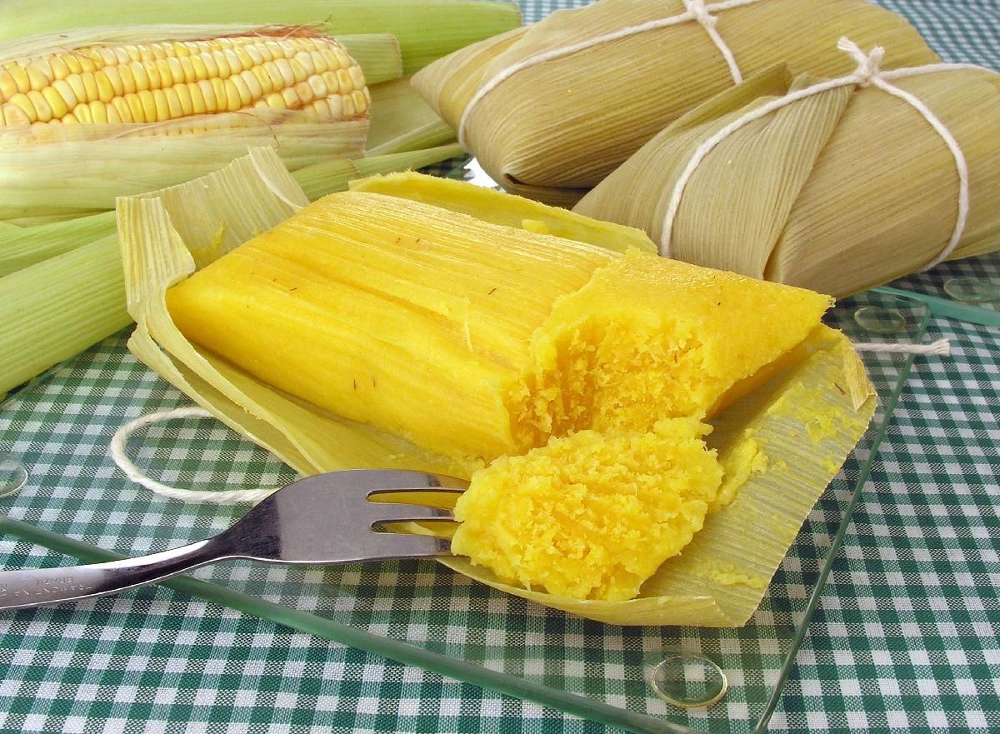

Ingredientes
- 8 espigas de milho verde
- 1 xícara de açúcar
- 1/2 xícara de leite
- Sal a gosto
- Palha de milho para enrolar
Modo de Preparo
- Rale o milho ou bata no liquidificador.
- Adicione o açúcar, o leite e o sal, misturando bem.
- Envolva a massa na palha de milho e amarre.
- Cozinhe em água fervente por aproximadamente 40 minutos.
- Retire da água, escorra e sirva.